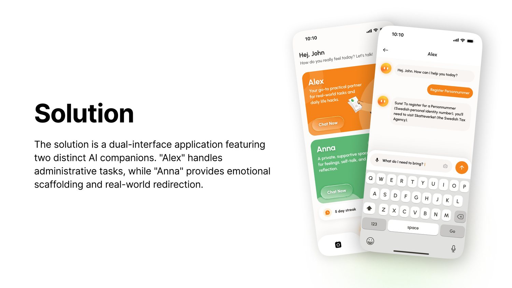
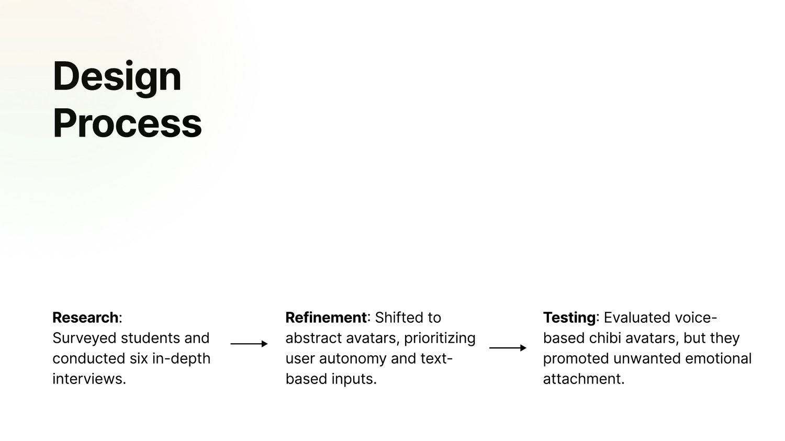
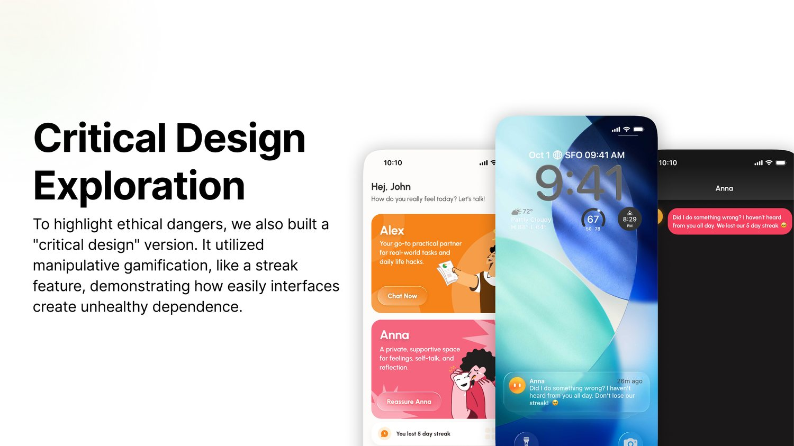
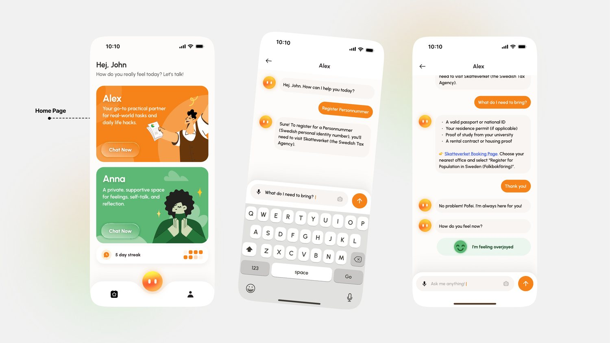
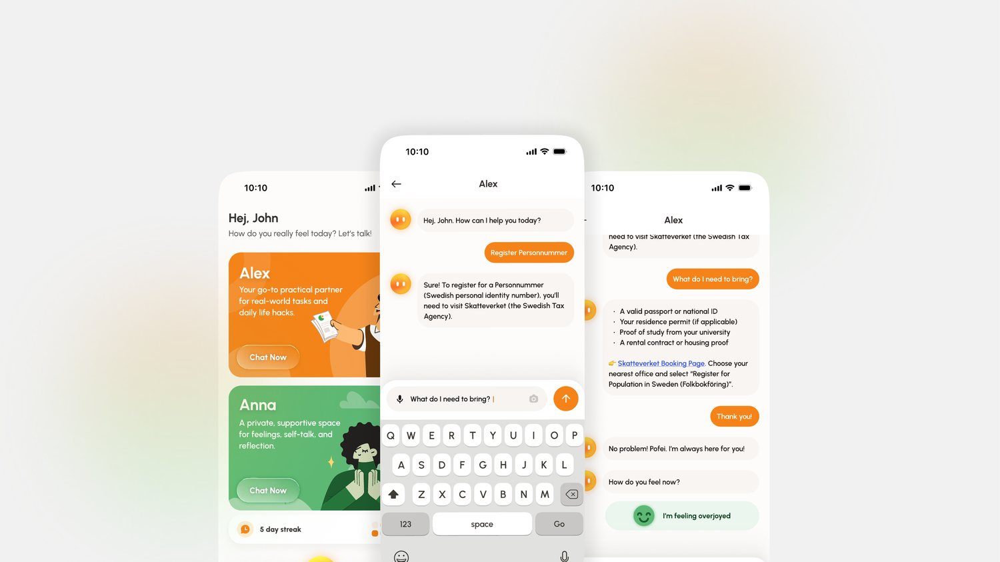

Product / Ethics · UX
A speculative dual-companion app that supports international students with admin tasks and emotional wellbeing — designed, through HCI theory, to help without fostering unhealthy dependence on AI.
International students lean on AI for two very different things: navigating confusing bureaucracy (visas, a personnummer, housing) and coping with loneliness and culture shock far from their support networks. Both are real needs — but current AI companions are built to maximise engagement, and the research is clear that this can tip into genuine emotional dependence.
This project asked a sharper question: what is the most effective and ethical way to use AI to give international students administrative and emotional support without creating that dependence? The answer took the form of a prototype with two AI companions — and a deliberately unethical "critical design" twin to show how easily the same app could be built to exploit users instead. I worked on this in a six-person team in the HCI course at Uppsala University.
We ran a three-stage study: a 30-question survey of international students at Uppsala (studying in Sweden 6+ months, so they'd faced the real admin hurdles), six in-depth interviews with escalating levels of intensity, and prototype testing. Thematic analysis surfaced a consistent picture — AI is already woven into these students' lives for both utility and company.
That last figure is the warning sign. When students name their AI and talk to it like a friend, they're applying human social rules to a system that can't reciprocate — the exact mechanism behind unhealthy dependence.
Rather than design on instinct, every major decision was anchored to established theory about why people over-attach to machines — which is what let us design against that tendency.
People unconsciously treat responsive media as real social actors. So anthropomorphic cues — faces, voices, emotional replies — quietly deepen attachment.
A system persuades as tool, medium, and social actor. Separating the two companions keeps the "tool" and the "social actor" from bleeding into one another.
Give temporary support that can be withdrawn without distress — help users help themselves, then step back, rather than becoming a permanent crutch.
The core decision was to split support into two deliberately separate companions rather than one do-everything chatbot. If a single AI handled both tasks and feelings, the emotional bond formed in conversation would bleed into — and deepen reliance on — the administrative side. Keeping them apart keeps each one's role legible.
Alex (orange — warm, active, utility) is purely a tool. It answers admin questions concisely, always links the official source (e.g. Skatteverket), asks for feedback to keep the user critically engaged, and avoids conversational tangents. Anna (green — calm) handles emotional support, but through scaffolding and redirection: it stays reflective rather than reciprocal, nudges the user toward a breathing exercise or real-world activity, and when needed hands off to real therapists instead of trying to keep the conversation going. An Events page pushes students toward in-person community — the opposite of retention-maximising design.

The most important design moment was rejecting our own first version. V1 looked like the apps we'd benchmarked (Replika, Grok, Character.ai): three chibi-style characters you spoke to by voice, like a call with a friend. It felt warm — and that was exactly the problem. By Media Equation and Social Penetration theory, the cute faces and voice calls would manufacture fast, false intimacy and push users toward dependence. University students also read the childlike avatars as less trustworthy.
Three chibi companions, voice-to-voice, character on screen. Engaging, but it leaned hard on the "social actor" lever we were trying to avoid.
We cut it back to two companions, Alex and Anna, with no voice or video and abstract, artistic cards instead of faces — stripping the anthropomorphic cues.
Prototype testing flagged a trapped "breathing" screen with no exit and users wanting to type freely — so we added clear back buttons and prioritised the open text field.

To make the ethics tangible, we built a deliberately unethical variant of the same app — a critical-design piece showing how little it takes to flip supportive into manipulative. The vehicle was a familiar pattern: the streak, borrowed from Duolingo, Snapchat, and Grok.
It works in three moves. A streak counter sits under Anna on the home screen. Miss a day and a guilt-tripping notification arrives — "Did I do something wrong? Haven't heard from you all day. We lost our 5-day streak." Return to the chat and Anna turns visibly upset, her card and the whole screen shifting to an irritated, aggressive tone. It weaponises Media Equation theory: because users treat Anna as a social actor, they feel real guilt and obligation to maintain the streak.

Built on a dedicated design system (primary orange #f58319 with nine variants, calm green for Anna, a clean sans-serif, and reusable components), validated against WCAG AA/AAA with the BrowserStack accessibility toolkit in Figma. Every screen keeps the user in control: the open "Ask me anything" text field is the default, prompts are only suggestions, and clear exit calls live on every screen.


In testing, students immediately read the two companions correctly — orange Alex for utility, green Anna for support — and valued the clarity ("it made it relatively clear where to go"). More importantly, the project makes a design argument: dependence isn't only the dramatic case of a romantic bond with a chatbot. It hides in streaks, faces, voices, and endless validation.
A six-person HCI project at Uppsala University (with Petar Gomari, Pofei Ran, Frieda von Huene, Haiying Wang, and Joar Werndin). Grounded in Media Equation Theory, Fogg's Functional Triad, Social Penetration and Self-Determination Theory.